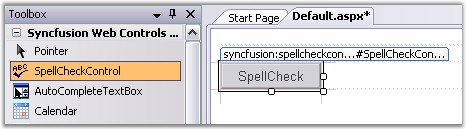
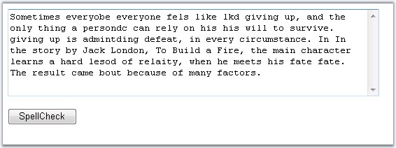

To spell check a text box control, follow the below given steps.
1. Create a new ASP.NET Web application. For details, see Creating ASP.NET Web Application.
2. Drag the SpellCheckControl and TextBox control on the Web Form.

Figure 89
|
[ASPX]
<cc1:SpellCheckControl ID="SpellCheckControl1" runat="server"></cc1:SpellCheckControl> |
3. In the text box, to input more than a single line, set the TextMode property to MultiLine.
4. Here, set the ControlIdToCheck property to the textbox id for which spell check has to be performed.
5. Build and run the application.

Figure 90
6. Click the SpellCheck LinkButton.
7. It opens a built-in dialog form displaying the text along with misspelled words being highlighted.
8. To replace the misspelled word, select a suggestion given in the suggestion list.

9. When you double-click the words in the Suggestion list, the Replace function is performed automatically.
10. For the words not available in the suggestion list, custom word can be included using the Replace With text box.
11. For the change to reflect in the textbox, click OK. To cancel changes click the Cancel button.
12. Build and run the application. Enter text in the textbox and perform a spell check on the contents.